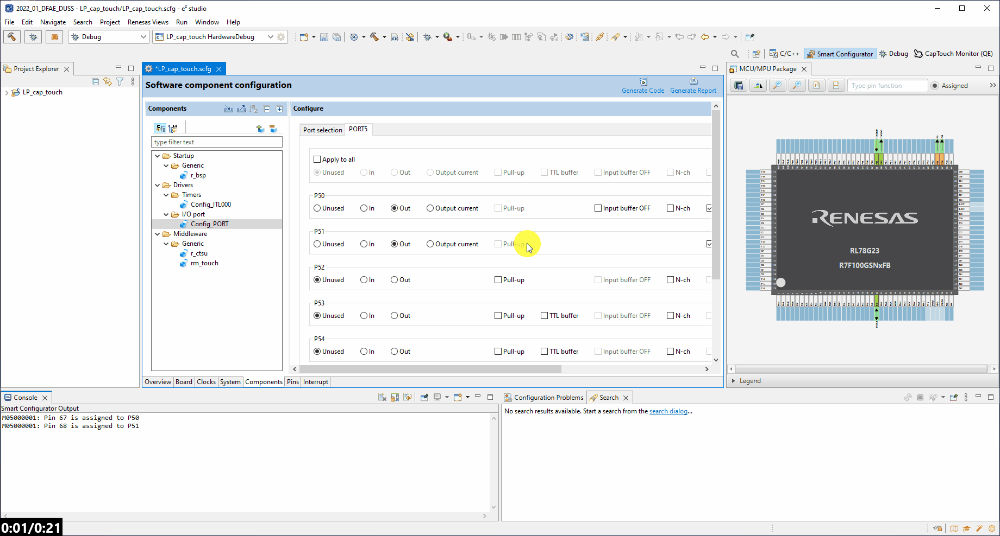
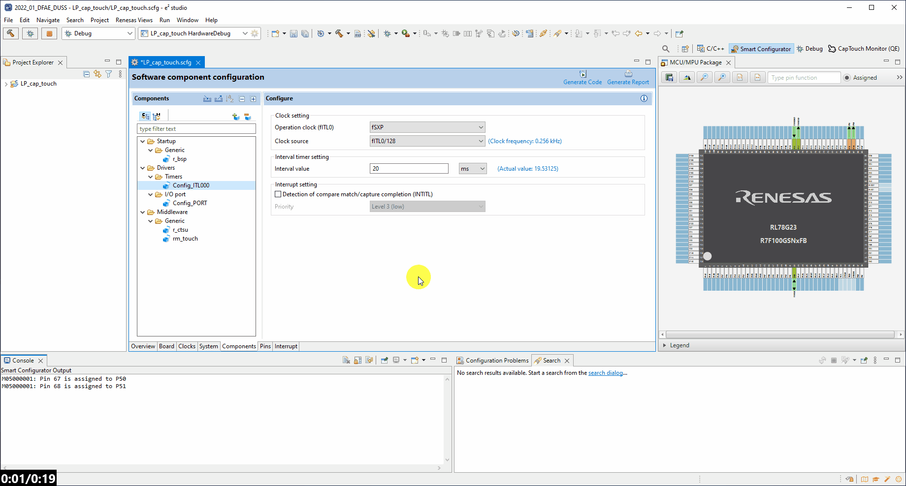

3. Configuring the Project
Here we will guide you through configuring the RL78/G23 128p FPB low power capacitive touch project using the smart configurator.
3.1 - Clocks & Supply
Select the Clocks tab of the smart configurator and make the following settings:
- Operation Mode: High-speed main mode 1.8(V)~5.5(V) (first drop down)
- EVDD Setting: 1.8(V)~5.5(V) (second drop down)
- fSXP Selector: Low-speed on-chip oscillator (you will need to scroll down a little)

3.2 - System
Select the System tab of the smart configurator and make the following settings:
- On-chip debug operation setting: COM Port Debugging

3.3 - Components
Select the Components tab of the smart configurator and using the Add Components button, add the following:
- Capacitive Sensing Unit Driver
- Touch Middleware
- Interval Timer (IMPORTANT: Ensure when you click next that the dropdown Resource = ITL000)
- Ports
3.4 - Setup Ports
Remaining in the Components tab:
- Select the Config_PORT component
- Enable Port 5
- Navigate to the newly avialable PORT5 tab
- Set P50 and P51 to outputs
- Set both P50 and P51 to initial output high (1) (turning off on board LED's by default)
3.5 - Setup Low Power Timer
Remaining in the Components tab:
- Select the Config_ITL000 component
- Set the operation clock to fSXP
- Set the clock source to fITL0/128
- Set the interval to 20ms
- Uncheck the detection of the interrupt checkbox

3.6 - Setup CTSU
Remaining in the Components tab:
- Select the r_ctsu component
- Set the Data transfer of INCTSUWR and INTCTSURD to DTC (thus enabling CTSU to complete its operation in snooze mode)
- Now Enable:

3.7 - Generate Code
Now click Generate Code.